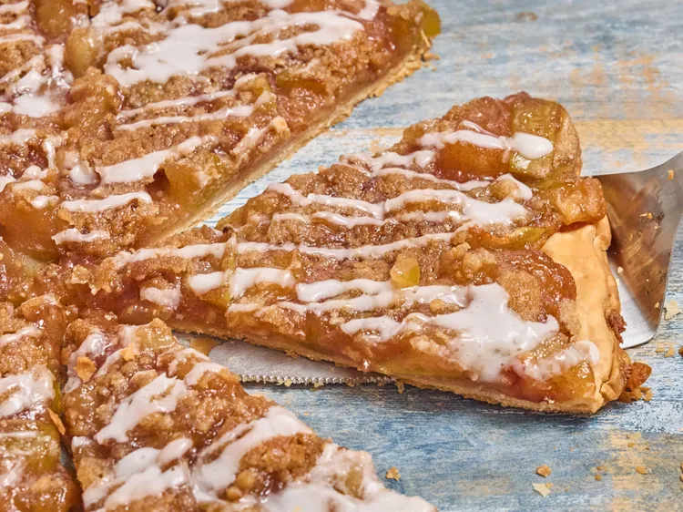

Common Recipes
Apple Pie Pizza

This apple pie pizza puts a playful spin on the classic pairing of apples and cheese. Apple slices and white Cheddar cheese are layered over refrigerated pie crust, topped with a buttery crumble, baked until golden, and finished with a simple glaze for an easy dessert that's both comforting and unexpected.
Ingredients
- 1 (14 ounce) package refrigerated pie crust
- 6 tablespoons softened butter, divided
- 4 medium Fuji or Granny Smith apples, peeled, cored, and cut into 1-inch pieces
- 1/4 teaspoon kosher salt, divided
- 1 1/2 teaspoons ground cinnamon, divided
- 1/2 cup white sugar
- 1/3 cup cold water, divided
- 1 tablespoon cornstarch
- 1/2 cup brown sugar
- 1/2 cup all-purpose flour
- 2/3 cup shredded white Cheddar cheese
- 1 cup confectioner's sugar
- 2 tablespoons milk, or as needed
Steps
- Remove pie crusts from the refrigerator and let stand at room temperature while filling is prepared.
- Heat 2 tablespoons butter in a large skillet until melted. Add apples, 1/8 teaspoon salt, 1 1/4 teaspoon cinnamon, white sugar, and 3 tablespoons of water. Stir until well combined and bring mixture to a simmer. Cook, stirring occasionally, until apples are tender, about 8 to 10 minutes.
- Meanwhile, whisk together remaining water and cornstarch until it is dissolved. Add cornstarch mixture to apple mixture and stir until well incorporated. Bring mixture to a simmer and cook one minute until thickened. Remove from heat and let cool.
- Meanwhile add flour and brown sugar to a bowl. Add in remaining butter, salt, and cinnamon and mix with hands or a fork until well combined and crumbly. Set aside.
- Preheat the oven to 400 degrees F (200 degrees C). Stack 2 pie crusts on top of each other and press them together. Use a rolling pin to roll the crust out to 12 to 14 inches and to form one crust. Transfer dough to a pizza pan and, If desired, crimp the edges like a pie.
- Sprinkle crust with cheese and top with apple mixture. Add brown sugar crumble evenly to the top.
- Bake in the preheated oven until browned and bubbly, 22 to 25 minutes. Let stand at least 10 minutes before serving.
- Whisk confectioner's sugar and milk together and drizzle mixture over the “pizza.” Cut into wedges and serve.